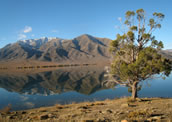

Oamaru and Waitaki Valley
Oamaru offers a refreshing blend of historic charm and hidden treasures. Boasting a vibrant Historic town centre that features New Zealand's best 19th Century streetscape plus a world famous Blue Penguin Colony, Oamaru is not to be missed.
Oamaru is internationally renowned for its neo-classical buildings crafted from locally quarried Oamaru Stone. The nearby harbour is recognised as a site of national significance by the New Zealand Historic Places Trust and is also home to the Oamaru Blue Penguin Colony. About a half-hour drive south of Oamaru is the small fishing settlement of Moeraki where the famous Moeraki boulders are situated. Huge, completely round, smooth rocks sit in the beach like giant bowling balls. These boulders are the largest, most spherical and densely populated in the world.
North west of Oamaru, Waitaki Valley is home to New Zealand's largest braided river, the Waitaki River sourced from the snowy peaks of the Southern Alps. The valley boasts picturesque, man-made lakes that are part of a complex hydro-electric dam system. The drive from Oamaru to the head of the valley takes you through stunning sweeping vistas of snow capped mountains and deep blue lakes.